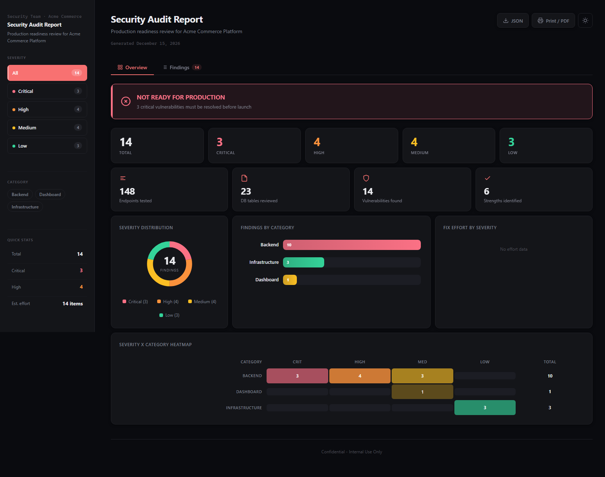
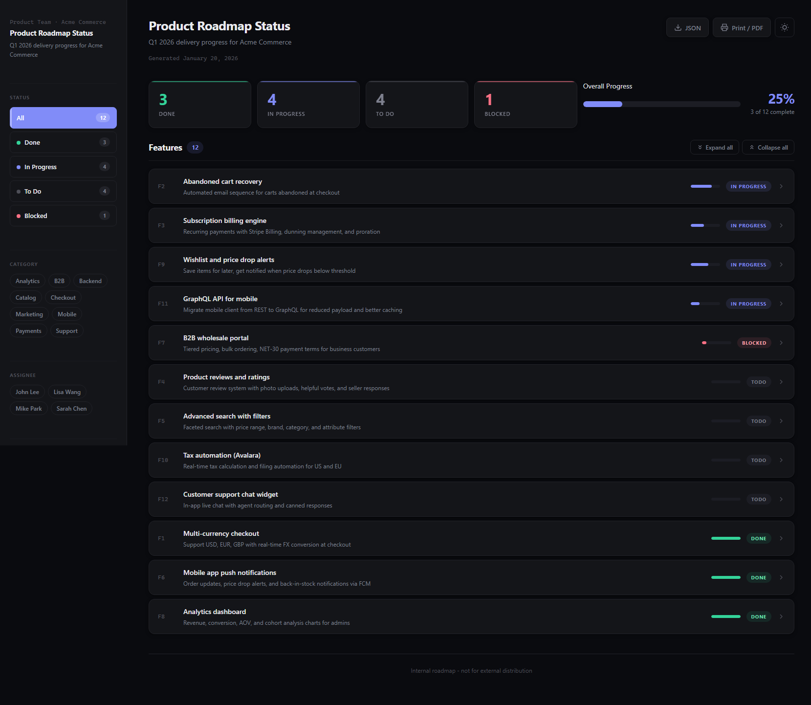
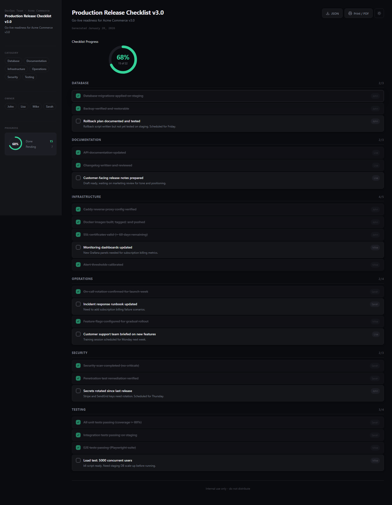
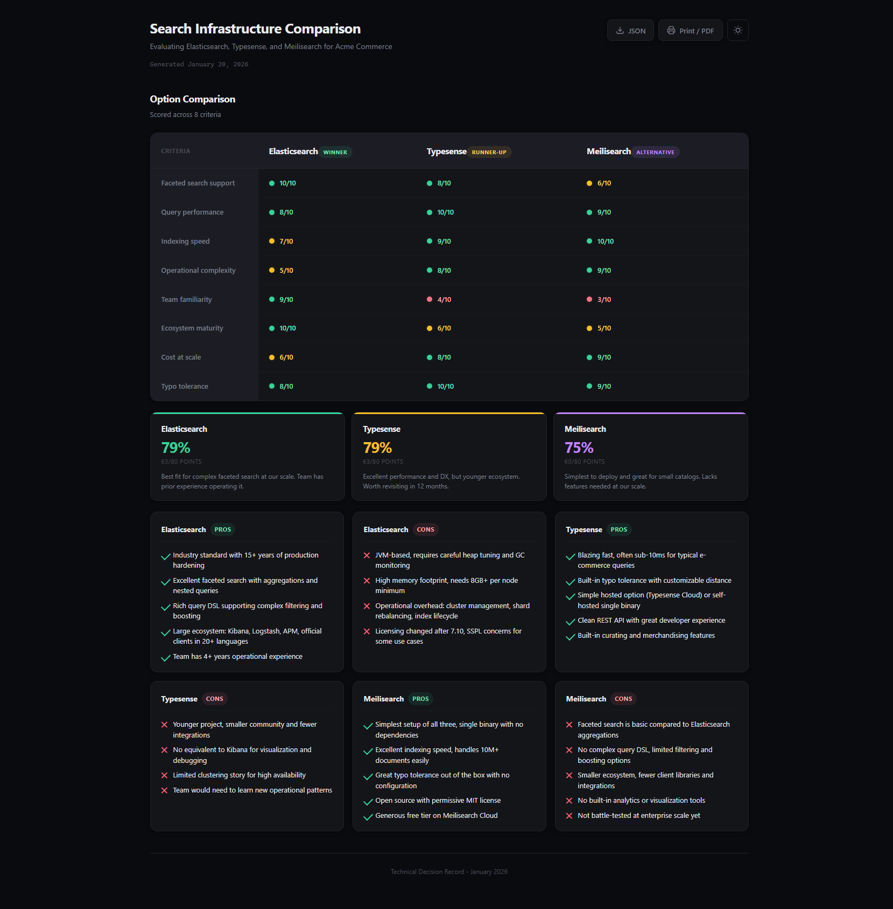

A Claude Code and Devin skill that transforms structured data into polished, self-contained HTML dashboards. Security audits, feature trackers, release checklists, tool comparisons. No server, no dependencies, no build step.
npx skills add neang-mengseang/findings-visualizer
Install the findings-visualizer skill by running this command: npx skills add neang-mengseang/findings-visualizer After installing, I can ask you to visualize reports by saying things like "turn these findings into a visual report" or "make a status dashboard for these features". The skill supports security audits, feature trackers, release checklists, and tool comparisons.
Each report type auto-detects the right components from your data shape. Or mix them freely.

Severity-based findings with donut charts, category breakdowns, effort estimates, heatmap, and a pass/fail verdict banner.

Track features with status cards, progress bar, and expandable rows showing assignee, notes, tags, and due dates.

Interactive checklist with circular progress ring, grouped items by category, and owner assignments with notes.

Score options across criteria with colored dots, summary cards, and detailed pros/cons for each alternative.
Thoughtful defaults, full control when you need it. 20 composable components, 7 templates, 6 color presets.
No rigid types. Components appear based on your data. Mix audits with checklists, comparisons with verdicts, any combination.
Security audit, code review, feature status, release checklist, comparison, performance, architecture. Or skip templates entirely.
Live filters for severity, status, category, assignee, and owner. Mini progress ring and quick stats update in real time.
One-click theme toggle with circular reveal animation. 6 color presets with per-mode customization. Persists across sessions.
Print to PDF with optimized stylesheet. Export raw JSON back from the page. Single self-contained HTML file, no dependencies.
Charts, cards, lists, tables, filters, banners, progress rings. Each is independent. Reorder, hide, or mix freely via config.
Optional shortcuts for common report types. Or let auto-detection handle it. Three levels of control: auto, template, manual.
Penetration tests, vulnerability reports
Code reviews, lint reports, tech debt
Sprint boards, roadmaps, project status
Release gates, QA checklists, deploy readiness
Tool selection, vendor evaluation, decisions
Load tests, performance reviews, benchmarks
Architecture reviews, design audits
No template? Just provide data. The right components appear automatically.
From data to dashboard in three steps. No build pipeline, no server, no config files to maintain.
Write a simple JSON config with your findings, items, or comparison data. Or just paste data into the conversation.
Tell Claude Code or Devin to visualize the report. The skill handles component selection, theming, and layout automatically.
A single self-contained HTML file opens in your browser. Share it, print it, attach it to a PR. No server needed.
Install the skill and turn your next report into a dashboard in seconds.